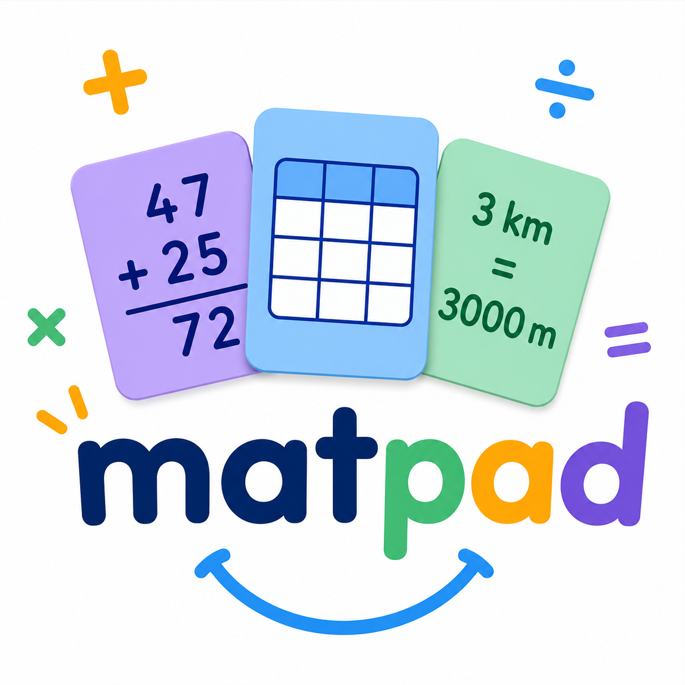

＋ − × ÷
Je pose mes
opérations.
Additions, soustractions, multiplications, divisions… Chaque chiffre trouve sa place.
Des calculs bien alignés
Nous contacter ↗Moins de temps à mettre en forme.
Plus de place pour apprendre.
Opérations, tableaux, conversions : MatPad accompagne les élèves avec des outils clairs, colorés et faciles à prendre en main.
Découvrir MatPad ↓Du premier chiffre à la leçon terminée,
chacun avance à son rythme.
Additions, soustractions, multiplications, divisions… Chaque chiffre trouve sa place.
Des calculs bien alignésDes tableaux en quelques secondes, à compléter et à intégrer directement dans mes leçons.
Mes idées, bien organiséesLongueurs, masses, capacités… Des tableaux prêts à l’emploi pour passer d’une unité à l’autre.
Les unités deviennent plus clairesInterfaces illustrées pour cette présentation. Retrouve les vues de l’application dans l’Apple store accessible en bas de page.
Aujourd’hui, je m’entraîne !
Je prépare dans MatPad, j’exporte et je retrouve mon travail dans mon application de prise de notes.
Mon opération, mon tableau ou ma conversion.
En image JPG ou en PDF, depuis mon iPad.
J’importe le fichier dans mon app de notes, puis j’annote et je continue à apprendre.
Pas de compte, pas de publicité, pas de suivi. Les données saisies sont traitées localement sur l’iPad. Tu choisis toi-même quand et où exporter ton travail.
Notre politique de confidentialité ↗Aux élèves qui utilisent un iPad à l’école, ainsi qu’aux familles et aux enseignants qui les accompagnent. Les repères colorés aident à structurer et à présenter le travail.
Oui. Exporte ton travail en JPG ou en PDF, puis importe le fichier dans ton application de prise de notes via les options de partage d’iPadOS.
Non, MatPad ne nécessite aucun compte utilisateur et n’utilise aucun service publicitaire ni système de suivi.
Les contenus sont conservés temporairement en mémoire pendant l’utilisation. Pense à exporter les opérations et les tableaux que tu souhaites garder.